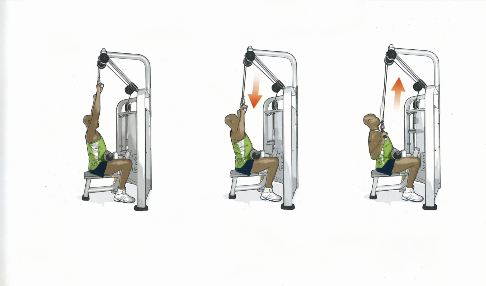
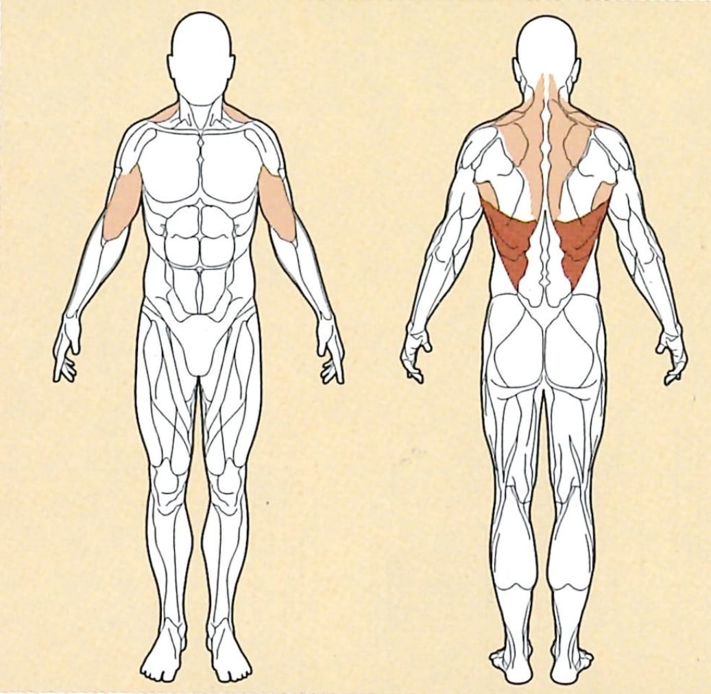
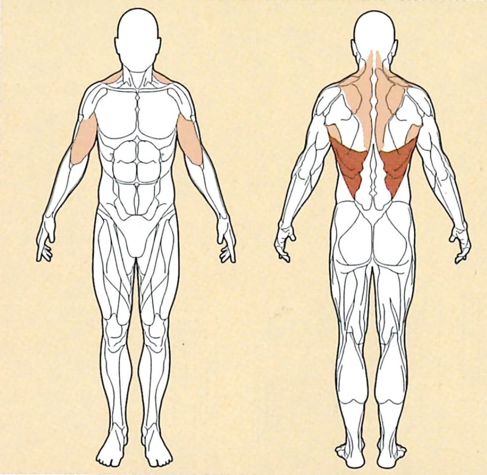

Rückenzug



Ausgangsposition
● Den Griff etwas weiter als Schulterbreit greifen
● Hinsitzen und dabei die Arme gestreckt halten
● Die Oberschenkel unter dem Polster platzieren
Ausführung
Ziehe die Schulterblätter leicht zusammen. Anschliessend ziehst du den Griff zu deiner Brust, dabei die Arme nahe am Körper halten, und leicht zurück lehnen
Rückführung
Nun lässt du den Griff langsam zurück gleiten, strecke deinen Rücken um so wieder in die Ausgangsposition zu kommen.